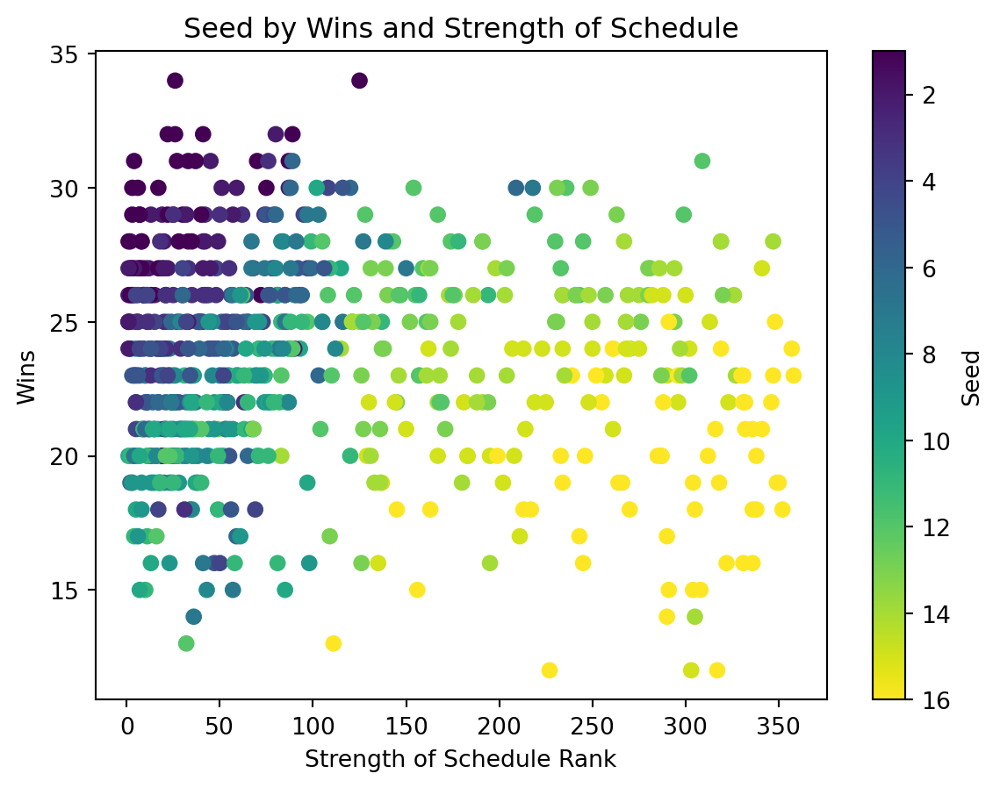
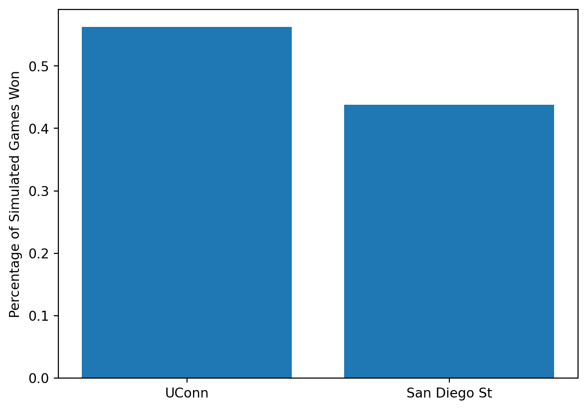

Every year I watch the March Madness tournament with my dad, always filling out brackets to see how well we could predict the tournament. All across the country people fill out brackets doing the same, this year roughly 21 million people filled out bracket. To this date not a single person has filled out a perfect bracket, with most, if not all, brackets getting a game wrong before the end of the first round. There are over 2.1 billion possible bracket combinations, 10 times the number of brackets that were filled out this year.
As a result I created this project to take a look into what makes a team qualified to make the NCAA College Basketball Tournament, as well what teams a simulation model believes will do well in this year’s tournament.
2 Data Collection
For this project all of the data was collected using web scraping. There are two main datasets that were created as a result of web scraping. The first data set includes team statistics from the years of 2012-2022 (except for 2019-20 due to the shortened season as a result of the COVID-19 pandemic). The second data set contained game-level data from the 2022-23 season, from which each team’s average points for, standard deviation of points for, and average points against were gained. The websites web scraped were Kenpom, for advanced statistics, Wikipedia, to read in which teams made each tournament, TeamRankings, for team statistics, and CBS for individual game scores.
The data set created for the historical was named fullstats. Resulting rows can be seen below. The first few rows were filled by Gonzaga, specifically their teams in the past five March Madness Tournaments. The dimensions of this data set were 680 rows by 30 columns, providing a wide arrange of statistics to look at.
Code
import pandas as pdfullstats = pd.read_csv("fullstats.csv")fullstats.head()
Seed
School
Conference
Record
Overall Seed
Berth type
PPG
OppPPG
year
Rk
...
AdjEM Rank
OppO
OppO Rank
OppD
OppD Rank
NCSOS_AdjEM
NCSOS_AdjEM Rank
State
Wins
Losses
0
1.0
Gonzaga
West Coast
26–3
1.0
Automatic
87.2
66.2
2022
1
...
93
104.6
101
100.3
89
-2.88
248
WA
26
3
1
1.0
Gonzaga
West Coast
26–0
1.0
Automatic
91.0
69.7
2021
1
...
72
108.1
70
96.8
74
6.21
112
WA
26
0
2
1.0
Gonzaga
West Coast
30–3
4.0
At-Large
87.6
64.9
2019
2
...
75
106.9
69
102.5
87
1.87
105
WA
30
3
3
4.0
Gonzaga
West Coast
30–4
15.0
Automatic
83.5
67.7
2018
10
...
108
106.4
102
104.8
128
3.12
78
WA
30
4
4
1.0
Gonzaga
West Coast
32–1
4.0
Automatic
82.6
61.5
2017
1
...
89
106.2
84
103.3
105
1.01
127
WA
32
1
5 rows × 30 columns
The second of the two created data sets was AllStats. This data set was much smaller than fullstats, but originally had roughly 5,500 rows before the data was prepared. As you can see below this data set shows 3 statistics for each team in 2023. Every Division 1 college team has a row, leading the dimensions to be 367 rows by 3 columns.
Code
import pandas as pdAllStats = pd.read_csv("AllStats.csv")AllStats.head()
Team
Points For
Standard Deviation
Points Against
0
Abilene Chr.
76.250000
14.658141
71.142857
1
Air Force
67.033333
11.909091
66.833333
2
Akron
73.500000
11.857632
65.466667
3
Alabama
83.344828
13.112905
69.103448
4
Alabama A&M
69.500000
10.199855
71.535714
3 Results
3.1 Which teams made March Madness?
To look into the past teams who have made the tournament I opted to look at the previous 10 tournaments. Some of the statistics we will be looking at include Wins, Strength of Schedule, Adjusted Rankings amongst other statistics.
Figure 1 below shows us which statistic, Wins or Strength of Schedule, is more important to earn higher seeds in March Madness. Obviously, having played the most difficult teams, while also winning a lot of games landed teams with the highest seeds. What is more interesting is the difference between teams with higher win counts and lower strength of schedules versus teams with lower wins and higher strength of schedules. It is apparent that strength of schedule is more of a factor than total wins, as some purple dots can be found in the bottom left of the scatter plot, but none are really found on the right of the plot at all.
Code
import pandas as pdimport matplotlib.pyplot as pltfullstats = pd.read_csv("fullstats.csv")# Create scatter plotplt.scatter(fullstats["AdjEM Rank"], fullstats.Wins, c = fullstats.Seed)# Add axis labels and titleplt.xlabel('Strength of Schedule Rank')plt.ylabel('Wins')plt.title('Seed by Wins and Strength of Schedule')# Create and format the colorbarcbar = plt.colorbar()cbar.ax.invert_yaxis() # invert the colorbar scale# Display the plotplt.show()# While it may have been obvious already, this chart shows that teams must have a good combination between wins and strength# of schedule to earn a high seed, if you do not play other good teams it is unlikely you earn a top seed.

Figure 1: Scatterplot of Seed determined by Wins and Strength of Schedule
Figure 2 shows the distribution of March Madness by states in which the school is located. Texas leads the pack, having a plethora of schools eligible for March Madness. More of a surprise to those who are not fans of college basketball, North Carolina ranks second amongst all states as it has perennial favorites such as Duke and North Carolina who make the tournament almost every year. The east half of the US dominates tournament bids outside a few states, namely Texas, California, and Kansas.
Code
import pandas as pdimport plotly.express as pxfullstats = pd.read_csv("fullstats.csv")# Group by state and count the occurrences of each two-letter abbreviationstate_counts = fullstats['State'].value_counts().reset_index(name='count').rename(columns={'index': 'state'})# Create a choropleth mapfig = px.choropleth(state_counts, locations='state', locationmode='USA-states', color='count', scope='usa', color_continuous_scale='YlOrRd')# Set title and colorbar labelfig.update_layout(title_text='March Madness Teams by State')fig.update_coloraxes(colorbar_title='# of Teams')# Show the plotfig.show()# The field seems to be made up of mainly teams from Texas, California, Virginia, New York, North Carolia and Ohio. The two# states that stand the most are Texas and North Carolina as Texas features a lot of Power 5 schools, while North Carolina # is top heavy having perennial favorites such as North Carolina and Duke that make the field almost every year.
Figure 2: Map of March Madness Teams by State (2012-2022)
Figure 3 shows the distribution of teams in March Madness by the conference in which they play in. The largest piece of the pie went to the 1-bid conferences, which are the conferences that sent one team each year, the minimum. As for the conferences that sent the most teams, the Big Ten, the ACC, the Big 12 and the Big East led all conferences in teams in March Madness from 2012-22. When looking at Figure 2 these conferences make sense to be the top team senders as they are mainly located on the east coast, in the mid west and in Texas.
Code
import pandas as pdMMteams = pd.read_csv("MMteams.csv")import matplotlib.pyplot as plt# Counts how many occurences of each conference are found in the datasetn =15conference_counts = MMteams['Conference'].value_counts()top_conferences = conference_counts[:n].index.tolist()MMteams.loc[~MMteams['Conference'].isin(top_conferences), 'Conference'] ='1 Bid Conferences'conference_counts = MMteams['Conference'].value_counts()# Plots the resulting Pie Chartplt.figure(figsize=(8,8))plt.pie(conference_counts, labels=conference_counts.index, autopct='%1.1f%%')plt.title('Conference Distribution')plt.show()# The 1-bid Conferences were the conferences in which between 2012 and 2022 only had one team each year. An interesting note# is that the "Power 5" were not the top 5 conferences on the list as the SEC and the Pac-12 both fell underneath the Big # East in this chart
Figure 3: Pie Chart of March Madness teams by Conference
Another look into the difference between conferences would be to look at each conference’s average seed. Figure 4 clearly shows groups of teams, showing which conferences usually produce the highest seeds. The top group consists of mostly the conferences that send the most teams as well, the only exceptions being the West Coast Conference and the American Athletic Conference, who both boast one team who is a perennial favorite the past 10 years, Houston and Gonzaga respectively. Up next are the Mid-Majors, the Atlantic 10, the Mountain West and the Missouri Valley all fall into their own little of around 8th-9th seed on average. These conferences usually send 2, maybe 3 teams that all typically fall between the 7th and 11th seeds. The last group is the 1-big conferences, very rarely if ever do these conferences send multiple teams into the tournament. These conferences only send the winner of their own conference tournament, which usually means that their teams will populate the 12th-16th seeds in the tournament, further backed up by Figure 4.
Code
import pandas as pdMMteams = pd.read_csv("MMteams.csv")import matplotlib.pyplot as plt# Group by year and calculate the mean of PPG and OppPPGMMteams['Seed'] = MMteams['Seed'].astype(str)# Removes all *'s and #'s from the Seed Column, and makes Seed a FloatMMteams['Seed'] = MMteams['Seed'].str.replace('*', '')MMteams['Seed'] = MMteams['Seed'].str.replace('#', '')MMteams['Seed'] = MMteams['Seed'].astype(float)# Plot the dual bar chartavg_seed = MMteams.groupby('Conference')['Seed'].mean()avg_seed_sorted = avg_seed.sort_values(ascending=False)# Create a bar chart of the average seed by conferencefig, ax = plt.subplots(figsize=(10, 10))# plot the bar chartax.barh(avg_seed_sorted.index, avg_seed_sorted.values)# customize the chartax.set_title('Average Seed by Conference')ax.set_xlabel('Conference')ax.set_ylabel('Average Seed')ax.tick_params(axis='x', rotation=10)plt.show()# There is an obvious jump between the Atlantic 10 and Conference USA on this chart. The reason is likely because the # conferences below the A10 usually get one sometimes two teams into the tournament, and since their teams are not as good# as the other conferences their teams struggle to gain a high enough Strength of Schedule to both make the tournament,# as well as earning top seeds
C:\Users\jpbne\AppData\Local\Temp\ipykernel_19348\3670223386.py:8: FutureWarning:
The default value of regex will change from True to False in a future version. In addition, single character regular expressions will *not* be treated as literal strings when regex=True.
Figure 4: Average Seed of Conferences
3.2 Which teams will do well this year?
To answer this question I decided to use a Monte Carlo Simulation on the Tournament. What it is in theory is taking two teams and simulating any given amount of games between them, in the case of this project 10,000 times. I used each team’s average points for, standard deviation of points for, and average points against to help predict both teams points in each of the 10,000 games. One team’s score is calculated using their points for and their opponents points against.
For example, if I wanted to simulate the National Championship game from this year (UConn vs San Diego State) I would input both of their names into the code.
Displayed in Figure 5 is the resulting simulation between UConn and San Diego State. Each time this page is loaded the simulation will run, generating 10,000 new scores for each team.
Code
# This is where the teams are chosen for the simulationimport pandas as pdimport mathfrom scipy.stats import normfrom numpy.random import uniformimport matplotlib.pyplot as pltimport numpy as npAllStats = pd.read_csv("AllStats.csv")AllStatsteam1 ="UConn"team2 ="San Diego St"# Assigns variables to team 1Team1PF = AllStats.loc[AllStats['Team'] == team1, 'Points For'].values[0]Team1PA = AllStats.loc[AllStats['Team'] == team1, 'Points Against'].values[0]Team1SDPF = AllStats.loc[AllStats['Team'] == team1, 'Standard Deviation'].values[0]# Assigns variables to team 2Team2PF = AllStats.loc[AllStats['Team'] == team2, 'Points For'].values[0]Team2PA = AllStats.loc[AllStats['Team'] == team2, 'Points Against'].values[0]Team2SDPF = AllStats.loc[AllStats['Team'] == team2, 'Standard Deviation'].values[0]# Creates Adjusted points for both teams based on values from each teamTeam1ADJ = math.sqrt(Team1PF * Team2PA)Team2ADJ = math.sqrt(Team2PF * Team1PA)# Generates one score for team 1norm.ppf( uniform(0, 1), loc=Team1ADJ, scale=Team1SDPF)# Generates one score for team 2norm.ppf( uniform(0, 1), loc=Team2ADJ, scale=Team2SDPF)# Names variables used for simulationN =10000outcome = np.empty(N, dtype='object')# Runs the simulation 10,000 timesfor i inrange(N): d = (np.random.normal(loc=Team1ADJ, scale=Team1SDPF) - np.random.normal(loc=Team2ADJ, scale=Team2SDPF)) d = team1 if d >0else team2 outcome[i] = d# Makes variables to help with visualizationoutcome_series = pd.Series(outcome)table = outcome_series.value_counts()rel_freq = table / table.sum()# Plots the relative frequencies as a bar chartplt.bar(x=rel_freq.index, height=rel_freq.values)# Plots Bar Graph and exact values for the Monte Carlo Simulationprint(table)plt.show()
UConn 5594
San Diego St 4406
dtype: int64

Figure 5: Simulated Wins for UConn and San Diego State
To answer the question of which teams the model predicts to do well I simulated each game of the March Madness tournament, the NIT, and the six conferences that have sent the most teams over the past 10 years (see Figure 3). What was found is that the conference tournaments were the most accurately predicted, followed by March Madness, then the NIT. The accuracies for each grouping are shown by Figure 6
Code
values = [37/63, 15/31, 52/70]labels = ['MM', 'NIT', 'Conference Tournaments']fig, ax = plt.subplots()ax.bar(labels, values)ax.set_ylabel('Accuracy')ax.set_xlabel('Tournament')ax.set_title('Accuracy of Model by Tournament Projected')plt.show()
Figure 6: Accuracies of Tournaments as predicted by simulation
When looking at which tournaments were predicted the best the shortcomings of the model were more evident than ever. Since the conference tournaments were between teams playing similar schedules, the difference of strength of schedule was certainly altering the model. Teams like Montana State were predicted to beat top ranked teams such as Kansas State and Kentucky. The NIT had lower rated teams winning at extremely high rates. The issue is that just looking at box scores ignores how rigorous the team’s schedule was. Teams from the ACC, the Big Ten, etc, played other teams within their conference, likely leading to close games. On the other hand, teams that fall in the 1-Bid conferences play worse teams during the season, boosting their points for and against. If there was a way to take strength of schedule or conference into account the accuracy of the model for March Madness and the NIT would likely increase.
4 Bracket Generater
One of the last features for this project was the ability to generate an entire bracket with one click. Similarly to the UConn vs San Diego State Simulation, each time this page is refreshed a new bracket will be generated. Below is the resulting bracket when it simulates just 3 games between teams, meaning the results of the simulations will change drastically every time. One of the features of the code is that the amount of games played can be specified before simulation. So if I wanted to make a bracket that simulated each game 10,000 times I could by simply changing the number in the function call.
This feature, along with the single game simulation, is only currently for the 2023 season. All that would be necessary for this code to work with any other season is the list of the teams competing in the tournament. Along with that, the AllStats equivalent for that year would be needed, which is also easily attainable due to the earlier webscraping work that is replicable for any season on the CBS website.
5 Future Work
There are two main things that I would like to add to this project. Firstly, as mentioned previously the ability for the model to judge strength of schedule is currently not up to par, adding something to account for the different schedules played in college basketball would go a long way in improving this model. Second would be to add to a score to the bracket generator. This would be accomplished by awarding points if the simulator chose the correct team to advance each round. Generating the bracket would then not only produce a new bracket, but also how well the bracket did when compared to what actually happened. On top of the fun part of that addition, it would also be very practical. When adjusting the model I would be able to also run tests to see if the average score of the model went up or down as a result of the change, intertwining both ends of the future work of this project.
The resources used to complete this project include: TidyX (2021), kenpom (2023), Wikipedia (2012-22), TeamRankings (2012-22) and CBS (2022-23).
kenpom. 2023. 2023 Pomeroy College Basketball Ratings.
TeamRankings. 2012-22. “NCAA BB Team Points Per Game,” 2012-22.
TidyX. 2021. “TidyX Episode 48 | NBA Game Simulation, Purrr, and Base r Distribution Functions.”
Wikipedia. 2012-22. “NCAA Division i Men’s Basketball Tournament,” 2012-22.
Source Code
---title: "March Madness Simulation"subtitle: "A computer's attempt to make a bracket"author: "Joseph Bellani"bibliography: references.bibnumber-sections: trueformat: html: theme: default rendering: default code-fold: true code-tools: true pdf: defaultjupyter: python3---# IntroductionEvery year I watch the March Madness tournament with my dad, always filling out brackets to see how well we could predict the tournament. All across the country people fill out brackets doing the same, this year roughly 21 million people filled out bracket. To this date not a single person has filled out a perfect bracket, with most, if not all, brackets getting a game wrong before the end of the first round. There are over 2.1 billion possible bracket combinations, 10 times the number of brackets that were filled out this year. As a result I created this project to take a look into what makes a team qualified to make the NCAA College Basketball Tournament, as well what teams a simulation model believes will do well in this year's tournament.# Data CollectionFor this project all of the data was collected using web scraping. There are two main datasets that were created as a result of web scraping. The first data set includes team statistics from the years of 2012-2022 (except for 2019-20 due to the shortened season as a result of the COVID-19 pandemic). The second data set contained game-level data from the 2022-23 season, from which each team's average points for, standard deviation of points for, and average points against were gained. The websites web scraped were Kenpom, for advanced statistics, Wikipedia, to read in which teams made each tournament, TeamRankings, for team statistics, and CBS for individual game scores.The data set created for the historical was named fullstats. Resulting rows can be seen below. The first few rows were filled by Gonzaga, specifically their teams in the past five March Madness Tournaments. The dimensions of this data set were 680 rows by 30 columns, providing a wide arrange of statistics to look at. ```{python}import pandas as pdfullstats = pd.read_csv("fullstats.csv")fullstats.head()```The second of the two created data sets was AllStats. This data set was much smaller than fullstats, but originally had roughly 5,500 rows before the data was prepared. As you can see below this data set shows 3 statistics for each team in 2023. Every Division 1 college team has a row, leading the dimensions to be 367 rows by 3 columns.```{python}import pandas as pdAllStats = pd.read_csv("AllStats.csv")AllStats.head()```# Results## Which teams made March Madness?To look into the past teams who have made the tournament I opted to look at the previous 10 tournaments. Some of the statistics we will be looking at include Wins, Strength of Schedule, Adjusted Rankings amongst other statistics.@fig-seed below shows us which statistic, Wins or Strength of Schedule, is more important to earn higher seeds in March Madness. Obviously, having played the most difficult teams, while also winning a lot of games landed teams with the highest seeds. What is more interesting is the difference between teams with higher win counts and lower strength of schedules versus teams with lower wins and higher strength of schedules. It is apparent that strength of schedule is more of a factor than total wins, as some purple dots can be found in the bottom left of the scatter plot, but none are really found on the right of the plot at all.```{python}#| label: fig-seed#| fig-cap: "Scatterplot of Seed determined by Wins and Strength of Schedule"import pandas as pdimport matplotlib.pyplot as pltfullstats = pd.read_csv("fullstats.csv")# Create scatter plotplt.scatter(fullstats["AdjEM Rank"], fullstats.Wins, c = fullstats.Seed)# Add axis labels and titleplt.xlabel('Strength of Schedule Rank')plt.ylabel('Wins')plt.title('Seed by Wins and Strength of Schedule')# Create and format the colorbarcbar = plt.colorbar()cbar.ax.invert_yaxis() # invert the colorbar scale# Display the plotplt.show()# While it may have been obvious already, this chart shows that teams must have a good combination between wins and strength# of schedule to earn a high seed, if you do not play other good teams it is unlikely you earn a top seed.```@fig-map shows the distribution of March Madness by states in which the school is located. Texas leads the pack, having a plethora of schools eligible for March Madness. More of a surprise to those who are not fans of college basketball, North Carolina ranks second amongst all states as it has perennial favorites such as Duke and North Carolina who make the tournament almost every year. The east half of the US dominates tournament bids outside a few states, namely Texas, California, and Kansas.```{python}#| label: fig-map#| fig-cap: "Map of March Madness Teams by State (2012-2022)"import pandas as pdimport plotly.express as pxfullstats = pd.read_csv("fullstats.csv")# Group by state and count the occurrences of each two-letter abbreviationstate_counts = fullstats['State'].value_counts().reset_index(name='count').rename(columns={'index': 'state'})# Create a choropleth mapfig = px.choropleth(state_counts, locations='state', locationmode='USA-states', color='count', scope='usa', color_continuous_scale='YlOrRd')# Set title and colorbar labelfig.update_layout(title_text='March Madness Teams by State')fig.update_coloraxes(colorbar_title='# of Teams')# Show the plotfig.show()# The field seems to be made up of mainly teams from Texas, California, Virginia, New York, North Carolia and Ohio. The two# states that stand the most are Texas and North Carolina as Texas features a lot of Power 5 schools, while North Carolina # is top heavy having perennial favorites such as North Carolina and Duke that make the field almost every year.```@fig-piechart shows the distribution of teams in March Madness by the conference in which they play in. The largest piece of the pie went to the 1-bid conferences, which are the conferences that sent one team each year, the minimum. As for the conferences that sent the most teams, the Big Ten, the ACC, the Big 12 and the Big East led all conferences in teams in March Madness from 2012-22. When looking at @fig-map these conferences make sense to be the top team senders as they are mainly located on the east coast, in the mid west and in Texas.```{python}#| label: fig-piechart#| fig-cap: "Pie Chart of March Madness teams by Conference"import pandas as pdMMteams = pd.read_csv("MMteams.csv")import matplotlib.pyplot as plt# Counts how many occurences of each conference are found in the datasetn =15conference_counts = MMteams['Conference'].value_counts()top_conferences = conference_counts[:n].index.tolist()MMteams.loc[~MMteams['Conference'].isin(top_conferences), 'Conference'] ='1 Bid Conferences'conference_counts = MMteams['Conference'].value_counts()# Plots the resulting Pie Chartplt.figure(figsize=(8,8))plt.pie(conference_counts, labels=conference_counts.index, autopct='%1.1f%%')plt.title('Conference Distribution')plt.show()# The 1-bid Conferences were the conferences in which between 2012 and 2022 only had one team each year. An interesting note# is that the "Power 5" were not the top 5 conferences on the list as the SEC and the Pac-12 both fell underneath the Big # East in this chart```Another look into the difference between conferences would be to look at each conference's average seed. @fig-confseeds clearly shows groups of teams, showing which conferences usually produce the highest seeds. The top group consists of mostly the conferences that send the most teams as well, the only exceptions being the West Coast Conference and the American Athletic Conference, who both boast one team who is a perennial favorite the past 10 years, Houston and Gonzaga respectively. Up next are the Mid-Majors, the Atlantic 10, the Mountain West and the Missouri Valley all fall into their own little of around 8th-9th seed on average. These conferences usually send 2, maybe 3 teams that all typically fall between the 7th and 11th seeds. The last group is the 1-big conferences, very rarely if ever do these conferences send multiple teams into the tournament. These conferences only send the winner of their own conference tournament, which usually means that their teams will populate the 12th-16th seeds in the tournament, further backed up by @fig-confseeds.```{python}#| label: fig-confseeds#| fig-cap: "Average Seed of Conferences"import pandas as pdMMteams = pd.read_csv("MMteams.csv")import matplotlib.pyplot as plt# Group by year and calculate the mean of PPG and OppPPGMMteams['Seed'] = MMteams['Seed'].astype(str)# Removes all *'s and #'s from the Seed Column, and makes Seed a FloatMMteams['Seed'] = MMteams['Seed'].str.replace('*', '')MMteams['Seed'] = MMteams['Seed'].str.replace('#', '')MMteams['Seed'] = MMteams['Seed'].astype(float)# Plot the dual bar chartavg_seed = MMteams.groupby('Conference')['Seed'].mean()avg_seed_sorted = avg_seed.sort_values(ascending=False)# Create a bar chart of the average seed by conferencefig, ax = plt.subplots(figsize=(10, 10))# plot the bar chartax.barh(avg_seed_sorted.index, avg_seed_sorted.values)# customize the chartax.set_title('Average Seed by Conference')ax.set_xlabel('Conference')ax.set_ylabel('Average Seed')ax.tick_params(axis='x', rotation=10)plt.show()# There is an obvious jump between the Atlantic 10 and Conference USA on this chart. The reason is likely because the # conferences below the A10 usually get one sometimes two teams into the tournament, and since their teams are not as good# as the other conferences their teams struggle to gain a high enough Strength of Schedule to both make the tournament,# as well as earning top seeds```## Which teams will do well this year?To answer this question I decided to use a Monte Carlo Simulation on the Tournament. What it is in theory is taking two teams and simulating any given amount of games between them, in the case of this project 10,000 times. I used each team's average points for, standard deviation of points for, and average points against to help predict both teams points in each of the 10,000 games. One team's score is calculated using their points for and their opponents points against.For example, if I wanted to simulate the National Championship game from this year (UConn vs San Diego State) I would input both of their names into the code. Displayed in @fig-sim is the resulting simulation between UConn and San Diego State. Each time this page is loaded the simulation will run, generating 10,000 new scores for each team.```{python}#| label: fig-sim#| fig-cap: "Simulated Wins for UConn and San Diego State"# This is where the teams are chosen for the simulationimport pandas as pdimport mathfrom scipy.stats import normfrom numpy.random import uniformimport matplotlib.pyplot as pltimport numpy as npAllStats = pd.read_csv("AllStats.csv")AllStatsteam1 ="UConn"team2 ="San Diego St"# Assigns variables to team 1Team1PF = AllStats.loc[AllStats['Team'] == team1, 'Points For'].values[0]Team1PA = AllStats.loc[AllStats['Team'] == team1, 'Points Against'].values[0]Team1SDPF = AllStats.loc[AllStats['Team'] == team1, 'Standard Deviation'].values[0]# Assigns variables to team 2Team2PF = AllStats.loc[AllStats['Team'] == team2, 'Points For'].values[0]Team2PA = AllStats.loc[AllStats['Team'] == team2, 'Points Against'].values[0]Team2SDPF = AllStats.loc[AllStats['Team'] == team2, 'Standard Deviation'].values[0]# Creates Adjusted points for both teams based on values from each teamTeam1ADJ = math.sqrt(Team1PF * Team2PA)Team2ADJ = math.sqrt(Team2PF * Team1PA)# Generates one score for team 1norm.ppf( uniform(0, 1), loc=Team1ADJ, scale=Team1SDPF)# Generates one score for team 2norm.ppf( uniform(0, 1), loc=Team2ADJ, scale=Team2SDPF)# Names variables used for simulationN =10000outcome = np.empty(N, dtype='object')# Runs the simulation 10,000 timesfor i inrange(N): d = (np.random.normal(loc=Team1ADJ, scale=Team1SDPF) - np.random.normal(loc=Team2ADJ, scale=Team2SDPF)) d = team1 if d >0else team2 outcome[i] = d# Makes variables to help with visualizationoutcome_series = pd.Series(outcome)table = outcome_series.value_counts()rel_freq = table / table.sum()# Plots the relative frequencies as a bar chartplt.bar(x=rel_freq.index, height=rel_freq.values)# Plots Bar Graph and exact values for the Monte Carlo Simulationprint(table)plt.show()```To answer the question of which teams the model predicts to do well I simulated each game of the March Madness tournament, the NIT, and the six conferences that have sent the most teams over the past 10 years (see @fig-piechart). What was found is that the conference tournaments were the most accurately predicted, followed by March Madness, then the NIT. The accuracies for each grouping are shown by @fig-accuracy```{python}#| label: fig-accuracy#| fig-cap: "Accuracies of Tournaments as predicted by simulation"values = [37/63, 15/31, 52/70]labels = ['MM', 'NIT', 'Conference Tournaments']fig, ax = plt.subplots()ax.bar(labels, values)ax.set_ylabel('Accuracy')ax.set_xlabel('Tournament')ax.set_title('Accuracy of Model by Tournament Projected')plt.show()```When looking at which tournaments were predicted the best the shortcomings of the model were more evident than ever. Since the conference tournaments were between teams playing similar schedules, the difference of strength of schedule was certainly altering the model. Teams like Montana State were predicted to beat top ranked teams such as Kansas State and Kentucky. The NIT had lower rated teams winning at extremely high rates. The issue is that just looking at box scores ignores how rigorous the team's schedule was. Teams from the ACC, the Big Ten, etc, played other teams within their conference, likely leading to close games. On the other hand, teams that fall in the 1-Bid conferences play worse teams during the season, boosting their points for and against. If there was a way to take strength of schedule or conference into account the accuracy of the model for March Madness and the NIT would likely increase.# Bracket GeneraterOne of the last features for this project was the ability to generate an entire bracket with one click. Similarly to the UConn vs San Diego State Simulation, each time this page is refreshed a new bracket will be generated. Below is the resulting bracket when it simulates just 3 games between teams, meaning the results of the simulations will change drastically every time. One of the features of the code is that the amount of games played can be specified before simulation. So if I wanted to make a bracket that simulated each game 10,000 times I could by simply changing the number in the function call.```{python}def Simulate(team1, team2, N):# Assigns variables to team 1 Team1PF = AllStats.loc[AllStats['Team'] == team1, 'Points For'].values[0] Team1PA = AllStats.loc[AllStats['Team'] == team1, 'Points Against'].values[0] Team1SDPF = AllStats.loc[AllStats['Team'] == team1, 'Standard Deviation'].values[0]# Assigns variables to team 2 Team2PF = AllStats.loc[AllStats['Team'] == team2, 'Points For'].values[0] Team2PA = AllStats.loc[AllStats['Team'] == team2, 'Points Against'].values[0] Team2SDPF = AllStats.loc[AllStats['Team'] == team2, 'Standard Deviation'].values[0] Team1ADJ = math.sqrt(Team1PF * Team2PA) Team2ADJ = math.sqrt(Team2PF * Team1PA)# Names variables used for simulation outcome = np.empty(N, dtype='object')# Runs the simulation 10,000 timesfor i inrange(N): d = (np.random.normal(loc=Team1ADJ, scale=Team1SDPF) - np.random.normal(loc=Team2ADJ, scale=Team2SDPF)) d = team1 if d >0else team2 outcome[i] = d# Makes variables to help with visualization outcome_series = pd.Series(outcome) table = outcome_series.value_counts() rel_freq = table / table.sum()return(table)teams = ["Alabama", "Texas A&M-CC", "Maryland", "West Virginia", "San Diego St", "Charleston", "Virginia", "Furman", "Creighton", "NC State", "Baylor", "UCSB", "Missouri", "Utah St.", "Arizona", "Princeton", "Purdue", "FDU", "Memphis", "FAU", "Duke", "Oral Roberts", "Tennessee", "Louisiana", "Kentucky", "Providence", "Kansas St.", "Montana St.", "Michigan St.", "USC", "Marquette", "Vermont", "Houston", "N. Kentucky", "Iowa", "Auburn", "Miami", "Drake", "Indiana", "Kent St.", "Iowa St.", "Pittsburgh", "Xavier", "Kennesaw St.", "Texas A&M", "Penn St.", "Texas", "Colgate", "Kansas", "Howard", "Arkansas", "Illinois", "Saint Mary's", "VCU", "UConn", "Iona", "TCU", "Arizona St.", "Gonzaga", "Grand Canyon", "Northwestern", "Boise St.", "UCLA", "UNC-Ash."]i =0x=' 'round2teams=[]while i <64: table = Simulate(teams[i], teams[i+1], 3) rows =len(table) table =str(table) table = table.replace("dtype: int64", "") table = table.replace(" ", "") table = table.strip() table =''.join([i for i in table ifnot i.isdigit()])if rows >1: table = table[:table.index("\n")] table = table.strip() y =14-len(table) z = y * x table = table + z round2teams.append(table) i = i +2k =0round3teams = []temp = []while k <32: temp.append(round2teams[k].strip()) temp.append(round2teams[k +1].strip()) table = Simulate(temp[k], temp[k+1], 3) rows =len(table) table =str(table) table = table.replace("dtype: int64", "") table = table.replace(" ", "") table = table.strip() table =''.join([k for k in table ifnot k.isdigit()])if rows >1: table = table[:table.index("\n")] table = table.strip() y =14-len(table) z = y * x table = table + z round3teams.append(table) k = k +2l =0round4teams = []temp2 = []while l <16: temp2.append(round3teams[l].strip()) temp2.append(round3teams[l +1].strip()) table = Simulate(temp2[l], temp2[l+1], 3) rows =len(table) table =str(table) table = table.replace("dtype: int64", "") table = table.replace(" ", "") table = table.strip() table =''.join([l for l in table ifnot l.isdigit()])if rows >1: table = table[:table.index("\n")] table = table.strip() y =14-len(table) z = y * x table = table + z round4teams.append(table) l = l +2m =0round5teams = []temp3 = []while m <8: temp3.append(round4teams[m].strip()) temp3.append(round4teams[m +1].strip()) table = Simulate(temp3[m], temp3[m+1], 3) rows =len(table) table =str(table) table = table.replace("dtype: int64", "") table = table.replace(" ", "") table = table.strip() table =''.join([m for m in table ifnot m.isdigit()])if rows >1: table = table[:table.index("\n")] table = table.strip() y =14-len(table) z = y * x table = table + z round5teams.append(table) m = m +2n =0round6teams = []temp4 = []while n <4: temp4.append(round5teams[n].strip()) temp4.append(round5teams[n +1].strip()) table = Simulate(temp4[n], temp4[n+1], 3) rows =len(table) table =str(table) table = table.replace("dtype: int64", "") table = table.replace(" ", "") table = table.strip() table =''.join([n for n in table ifnot n.isdigit()])if rows >1: table = table[:table.index("\n")] table = table.strip() y =14-len(table) z = y * x table = table + z round6teams.append(table) n = n +2champion = Simulate(round6teams[0].strip(), round6teams[1].strip(), 3)rows =len(champion)champion =str(champion)champion = champion.replace("dtype: int64", "")champion = champion.replace(" ", "")champion = champion.strip()champion =''.join([n for n in champion ifnot n.isdigit()])if rows >1: champion = champion[:champion.index("\n")] champion = champion.strip()j =0while j <64: y =14-len(teams[j]) z = y * x teams[j] = teams[j] + z j = j +1print(teams[0])print("——————————————|"+ round2teams[0])print(teams[1] +"|——————————————|")print("——————————————| |"+ round3teams[0])print(teams[2] +" |——————————————|")print("——————————————|"+ round2teams[1] +"| |")print(teams[3] +"|——————————————| |")print("——————————————| |"+ round4teams[0])print(teams[4] +" |——————————————|")print("——————————————|"+ round2teams[2] +" | |")print(teams[5] +"|——————————————| | |")print("——————————————| |"+ round3teams[1] +"| |")print(teams[6] +" |——————————————| |")print("——————————————|"+ round2teams[3] +"| |")print(teams[7] +"|——————————————| |")print("——————————————| |"+ round5teams[0])print(teams[8] +" |——————————————|")print("——————————————|"+ round2teams[4] +" | |")print(teams[9] +"|——————————————| | |")print("——————————————| |"+ round3teams[2] +" | |")print(teams[10] +" |——————————————| | |")print("——————————————|"+ round2teams[5] +"| | | |")print(teams[11] +"|——————————————| | | |")print("——————————————| |"+ round4teams[1] +"| |")print(teams[12] +" |——————————————| |")print("——————————————|"+ round2teams[6] +" | |")print(teams[13] +"|——————————————| | |")print("——————————————| |"+ round3teams[3] +"| |")print(teams[14] +" |——————————————| |")print("——————————————|"+ round2teams[7] +"| |")print(teams[15] +"|——————————————| |")print("——————————————| |"+ round6teams[0])print(teams[16] +" |——————————————|")print("——————————————|"+ round2teams[8] +" | |")print(teams[17] +"|——————————————| | |")print("——————————————| |"+ round3teams[4] +" | |")print(teams[18] +" |——————————————| | |")print("——————————————|"+ round2teams[9] +"| | | |")print(teams[19] +"|——————————————| | | |")print("——————————————| |"+ round4teams[2] +" | |")print(teams[20] +" |——————————————| | |")print("——————————————|"+ round2teams[10] +" | | | |")print(teams[21] +"|——————————————| | | | |")print("——————————————| |"+ round3teams[5] +"| | | |")print(teams[22] +" |——————————————| | | |")print("——————————————|"+ round2teams[11] +"| | | |")print(teams[23] +"|——————————————| | | |")print("——————————————| |"+ round5teams[1] +"| |")print(teams[24] +" |——————————————| |")print("——————————————|"+ round2teams[12] +" | |")print(teams[25] +"|——————————————| | |")print("——————————————| |"+ round3teams[6] +" | |")print(teams[26] +" |——————————————| | |")print("——————————————|"+ round2teams[13] +"| | | |")print(teams[27] +"|——————————————| | | |")print("——————————————| |"+ round4teams[3] +"| |")print(teams[28] +" |——————————————| |")print("——————————————|"+ round2teams[14] +" | |")print(teams[29] +"|——————————————| | |")print("——————————————| |"+ round3teams[7] +"| |")print(teams[30] +" |——————————————| |")print("——————————————|"+ round2teams[15] +"| |")print(teams[31] +"|——————————————| |")print("——————————————| |"+ champion)print(teams[32] +" |——————————————")print("——————————————|"+ round2teams[16] +" |")print(teams[33] +"|——————————————| |")print("——————————————| |"+ round3teams[8] +" |")print(teams[34] +" |——————————————| |")print("——————————————|"+ round2teams[17] +"| | |")print(teams[35] +"|——————————————| | |")print("——————————————| |"+ round4teams[4] +" |")print(teams[36] +" |——————————————| |")print("——————————————|"+ round2teams[18] +" | | |")print(teams[37] +"|——————————————| | | |")print("——————————————| |"+ round3teams[9] +"| | |")print(teams[38] +" |——————————————| | |")print("——————————————|"+ round2teams[19] +"| | |")print(teams[39] +"|——————————————| | |")print("——————————————| |"+ round5teams[2] +" |")print(teams[40] +" |——————————————| |")print("——————————————|"+ round2teams[20] +" | | |")print(teams[41] +"|——————————————| | | |")print("——————————————| |"+ round3teams[10] +" | | |")print(teams[42] +" |——————————————| | | |")print("——————————————|"+ round2teams[21] +"| | | | |")print(teams[43] +"|——————————————| | | | |")print("——————————————| |"+ round4teams[5] +"| | |")print(teams[44] +" |——————————————| | |")print("——————————————|"+ round2teams[22] +" | | |")print(teams[45] +"|——————————————| | | |")print("——————————————| |"+ round3teams[11] +"| | |")print(teams[46] +" |——————————————| | |")print("——————————————|"+ round2teams[23] +"| | |")print(teams[47] +"|——————————————| | |")print("——————————————| |"+ round6teams[1]+"|")print(teams[48] +" |——————————————|")print("——————————————|"+ round2teams[24] +" |")print(teams[49] +"|——————————————| |")print("——————————————| |"+ round3teams[12] +" |")print(teams[50] +" |——————————————| |")print("——————————————|"+ round2teams[25] +"| | |")print(teams[51] +"|——————————————| | |")print("——————————————| |"+ round4teams[6] +" |")print(teams[52] +" |——————————————| |")print("——————————————|"+ round2teams[26] +" | | |")print(teams[53] +"|——————————————| | | |")print("——————————————| |"+ round3teams[13] +"| | |")print(teams[54] +" |——————————————| | |")print("——————————————|"+ round2teams[27] +"| | |")print(teams[55] +"|——————————————| | |")print("——————————————| |"+ round5teams[3] +"|")print(teams[56] +" |——————————————|")print("——————————————|"+ round2teams[28] +" |")print(teams[57] +"|——————————————| |")print("——————————————| |"+ round3teams[14] +" |")print(teams[58] +" |——————————————| |")print("——————————————|"+ round2teams[29] +"| | |")print(teams[59] +"|——————————————| | |")print("——————————————| |"+ round4teams[7] +"|")print(teams[60] +" |——————————————|")print("——————————————|"+ round2teams[30] +" |")print(teams[61] +"|——————————————| |")print("——————————————| |"+ round3teams[15] +"|")print(teams[62] +" |——————————————|")print("——————————————|"+ round2teams[31] +"|")print(teams[63] +"|——————————————|")print("——————————————|")```This feature, along with the single game simulation, is only currently for the 2023 season. All that would be necessary for this code to work with any other season is the list of the teams competing in the tournament. Along with that, the AllStats equivalent for that year would be needed, which is also easily attainable due to the earlier webscraping work that is replicable for any season on the CBS website.# Future WorkThere are two main things that I would like to add to this project. Firstly, as mentioned previously the ability for the model to judge strength of schedule is currently not up to par, adding something to account for the different schedules played in college basketball would go a long way in improving this model. Second would be to add to a score to the bracket generator. This would be accomplished by awarding points if the simulator chose the correct team to advance each round. Generating the bracket would then not only produce a new bracket, but also how well the bracket did when compared to what actually happened. On top of the fun part of that addition, it would also be very practical. When adjusting the model I would be able to also run tests to see if the average score of the model went up or down as a result of the change, intertwining both ends of the future work of this project.The resources used to complete this project include: @tidyX, @kenpom, @wikipedia, @teamrankings and @CBS.